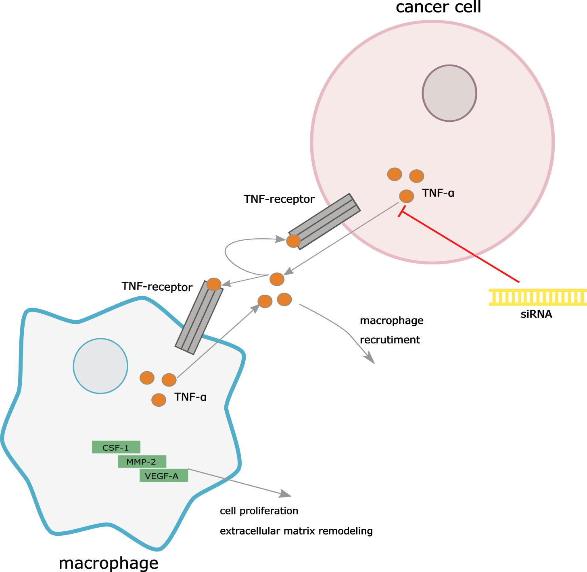

Autoimmunity and Cancer
Introduction
Autoimmune diseases and cancer are both broad classes of disease with a great deal of diversity between and within them. However, both classes of disease cross in fundamental regulatory pathways and this "cross-talk" can often result in one class of disease resulting in the other.
Immune System Basics and Balance of its Effects
The immune system is body's defense against pathogens. It comprises two main parts:| Innate | Adaptive |
|---|---|
| First line of body's defense against pathogens | The "specific" targeting arm of immune system |
Always on "patrol" for pathogens, profiling in pathogens by broad groups. Includes:
|
Has two main classes of cells:
|
Another important component shared between the subsystems are cytokines, which signaling proteins that modify the behavior of other cells, various cytkoines used to regulate immune response.
In a healthy immune system, the components of the immune system have been "pre-screened" to not attack the regular functional tissues in an individual - the immune system is said to be tolerant of self. However, sometimes this system breaks down and attacks itself, resulting in autoimmune disease.
[simplify for graphic]
Commonalties
Inflammation and hypoxia
Inflammation is hallmark of autoimmune disease as the innate immune system fights against itself. Chronic inflammation often results in low oxygen conditions (hypoxia). The combined effects of inflammation and hypoxia promote an increase in growth factors, cell proliferation, and hypoxia-compensating angiogensis. In cancer, abnormally low levels of oxygen are often observed in tumors and correlate with tumor malignancy by promoting angiogenesis.
[add graphic for hypoxia/inflammation]
Autoantibodies
Autoantibodies are antibodies that recognize self-tissue and are a common marker in both autoimmune disease and cancer. In some cases, the detection of the autoantibodies can be a realiable marker of an existing, and potentially asymptomatic tumor.
Autoimmunity to Cancer
Inflammation is promoted by various cytokines released by the immune system, with pro-inflammatory cytokines promoting cell growth and proliferation. However, a side-effect is that any cells that sustained DNA damage are also bolstered by the microenvironment provided by chronic inflammation.
One of these pro-inflammatory cytokines is tumor necrosis factor alpha (TNF-α), which promotes transcription of immune-regulatory proteins. TNF-α released by macrophages during an immune response can stimulate cancer cells, which produce and respond to its own secretion of TNF-α and upregulating nearby macrophages. This continuous loop amplifies the effects of downstream growth signals, promoting tumor angiogenesis and development of gallbladder cancers.
Potential Treatments
Treatment with siRNA against TNF-α to reduce its inflammatory effects has also shown promise in reducing tumor growth in comorbid cancer.
Cancer to Autoimmunity
Sometimes in the course of the immune system's response to tumor (i.e.neoplasm) cells, the immune response can go too far. Autoimmune diseases that manifest as a result of cancer are termed paraneoplastic syndromes.
POMA (paraneoplastic opsoclonus-myoclonus ataxia) is an example of a rare paraneoplastic neurological disorder that stems from some breast, ovarian, or lung cancers. In the course of generating antibodies against the cancer cells, the immune system ends up targeting a protein antigen responsible splicing of a dopamine receptor pre-mRNA transcript. The result of this neurological attack leads to ataxia, or loss of controlled movements.
An Acceptable Imbalance
It's doubtful that developing cancer is ever a desired outcome - except maybe in an experimental settings. And it's difficult to imagine a case where developing an autoimmune disease is desired either, but what if it was necessary for effective treatment of cancer?
In the last couple decades, great headway has been made in immunotherapy to redirect the immune system against cancer cells. The treatment of melanoma is particularly remarkable - development of vitiligo (depigmentation of skin) in course of treating melanoma correlates with a better prognosis.
Ipilimumab is a treatment that inhibits the inhibitors of cytotoxic T (CD8) cells, there by promoting the immune system to kill melanocytes. Since the immune response is casting a wide net, melanocytes are killed indiscrminantly, reducing the skin's pigment.
Coming from another angle, vaccination for a targeted "self" antigen can induce both vitiligo and tumor destruction. As mentioned previously, immune system cells are pre-screened to prevent auto-immune reactions, but for self antigens highly expressed in tumor, breaking that immunity can be useful. Using a recombinant vaccina virus encoding a self antigen has shown effectiveness in recruiment of T cells and tumor cell destruction.
[diagram for recombinant vaccina virus technique]